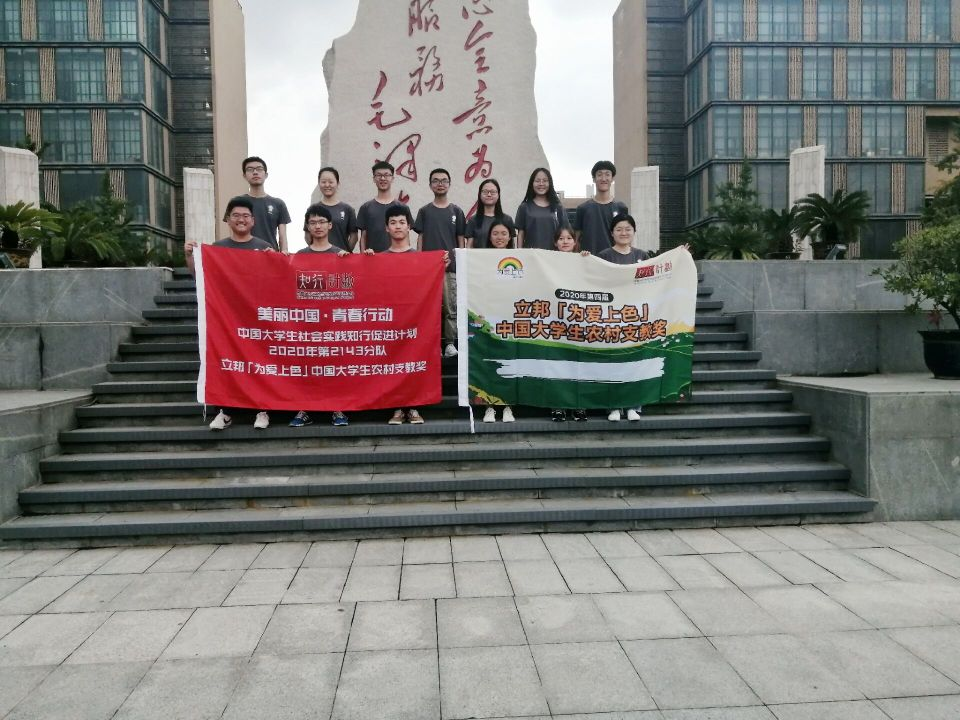

第三版
第三版

2020年伊始，病毒的侵袭让我们的家园黯然失色，祖国的花朵们也不能与阳光相遇，但疫情无情人有情，西电青年志愿者协会的青年们依然勇担重任，以己之力，帮助他人！我们承载志愿精神，希望以爱之名，把知识传递给乡村的孩子们，以屏为媒，我们一起在云端筑梦！在支教的短短两周里，我们被颗颗童心包围着，在线上“讲台”循循善诱，与孩子们切磋琢磨、教学相长！
初相遇，一切都很美好
在筹备“云支教”项目之初，我们经过层层面试、线上试讲、线上培训最终组成了西电青协云端筑梦支教队，在策划这一特殊的项目的过程中，每位成员互相鼓励、互相学习，在开班之前的试讲课上，各位“老师”互相提出问题，调整难易程度，亦师亦友的角色转化，让我们既享受到了“传道授业”的幸福，也设身处地地考虑到了孩子们的领悟程度。
在正式与孩子们课上相遇前，我们组织了一次“云支教开营仪式”的预热活动，志愿者们向大家介绍了每个课程的特色之处，孩子们也求知欲满满，积极向老师们提问如何使用新的软件，需要准备什么材料……在回答他们问题的同时，我们也回忆起了当初的懵懂，初相遇，一切都很美好，希望我们互相指教，蜕变成更好的自己！
相知相伴，学海同游
我们根据学生的具体学习情况，安排了丰富的基础课程和特色课程。大家既在趣味数学课堂上感受逻辑与理性的思维方式，又沉浸在语言与色彩的独特魅力中；既认识浩瀚的宇宙，仰望天空，研究日月，又探索生物界奥秘，感受生命的奇迹；既回归历史，学会剖析历史人物以史为鉴，也大胆展望未来，掌握科学知识进行创新创造……通过老师们基础知识的讲授，补充了同学们各方面的知识，还与现实相连，掌握新冠疫情的相关防护措施，大家都努力保护好自己，希望更快回到熟悉的课堂，见到亲爱的老师！
因为西安电子科技大学的电子信息类专业突出，负责这一专题的老师也希望发挥所长，敲开孩子们编程的大门，他以“把大象装进冰箱”为话题依次向孩子们讲解了顺序结构、判断结构、循环结构等，为他们今后的学习打下了坚实的基础；之后的课上老师带领同学们搭建“舞台”，通过设计动物运动的轨迹来学习如何更好地操作“慧编程”软件，令大家印象深刻的是在课程的最后一节课堂上，同学们与老师一起合作了一个毕业典礼的“舞台”，虽然支教之行暂时止步，但希望追求科技的道路已经打通，学海同游，我们一起前行！
相忆点滴，一夏无悔
两周的时间虽然很快过去，但我们与孩子们相处的点点滴滴都是美好的回忆，桃李之缘，千里相关，虽然彼此相隔千里，但缘分作桥，我们为了同样的目标，以屏为媒，云端筑梦！屏幕上孩子们真挚的眼神就是老师眼里最美的画面，希望孩子们可以掌握不同的思维方式，认识到还有更广阔的知识在等着大家去探索……希望我们的志愿者也可以不忘初心，传递爱与希望，与西电青协云端筑梦支教队一起解锁新的征程！